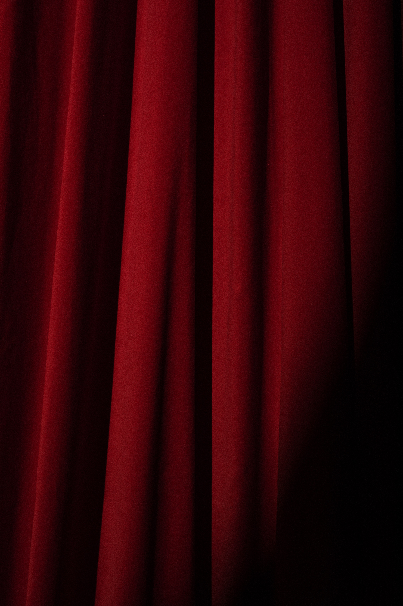

SMART Maker Festival is a family-friendly showcase of creativity, invention, and resourcefulness, and a celebration of the great minds contributing in the fields of innovation and Technologies.
It’s a place where people show what they are making, and share what they are learning.